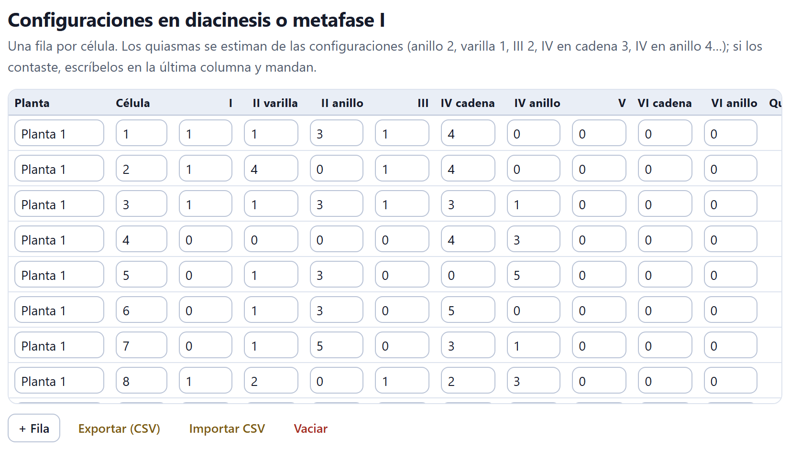
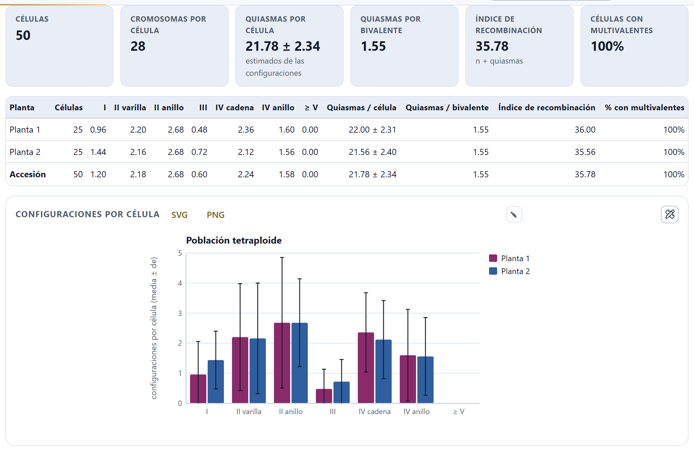
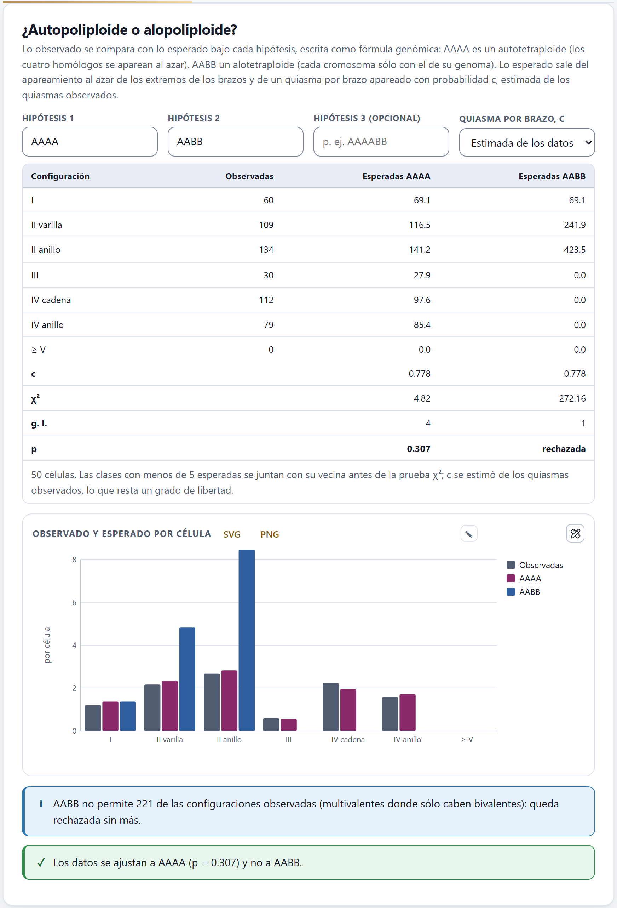
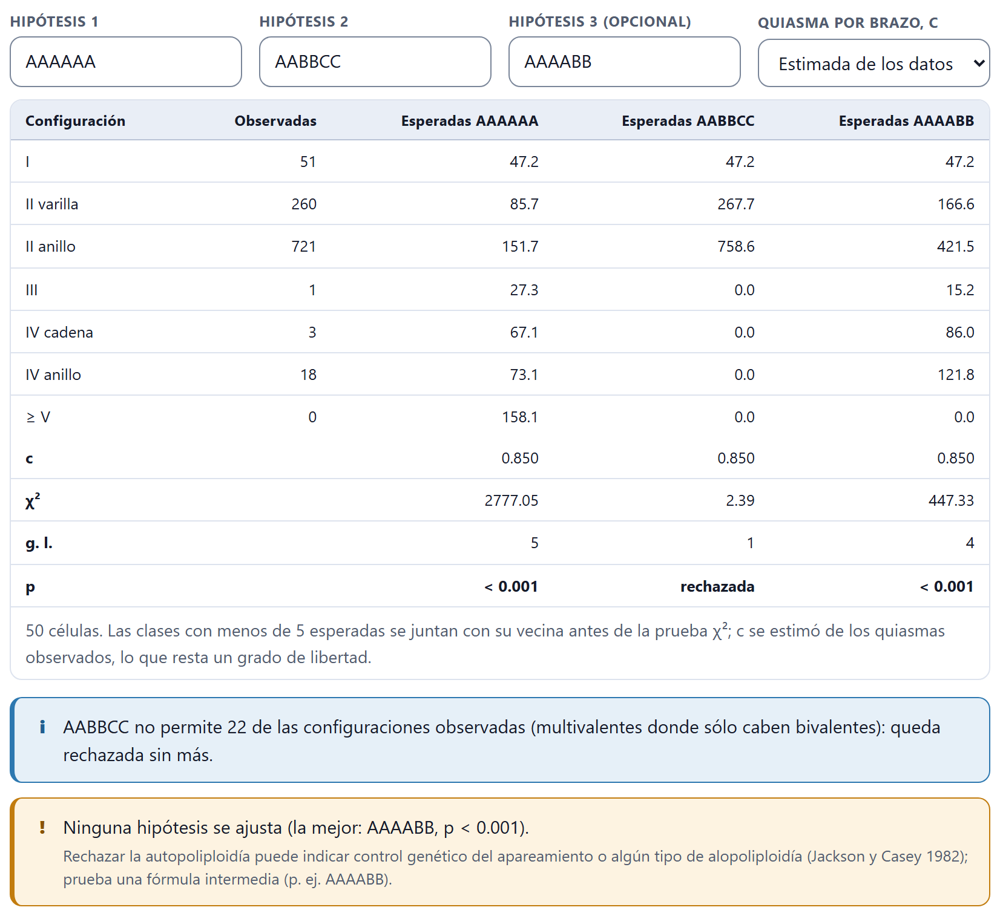
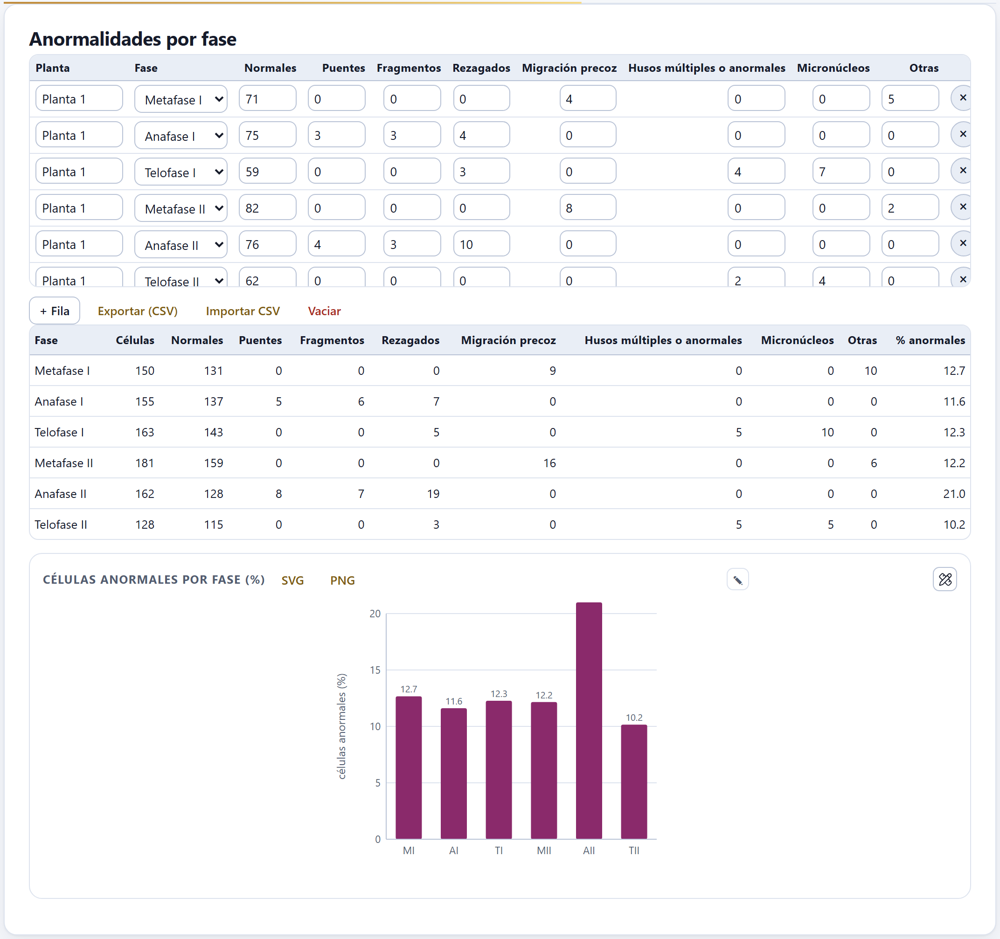
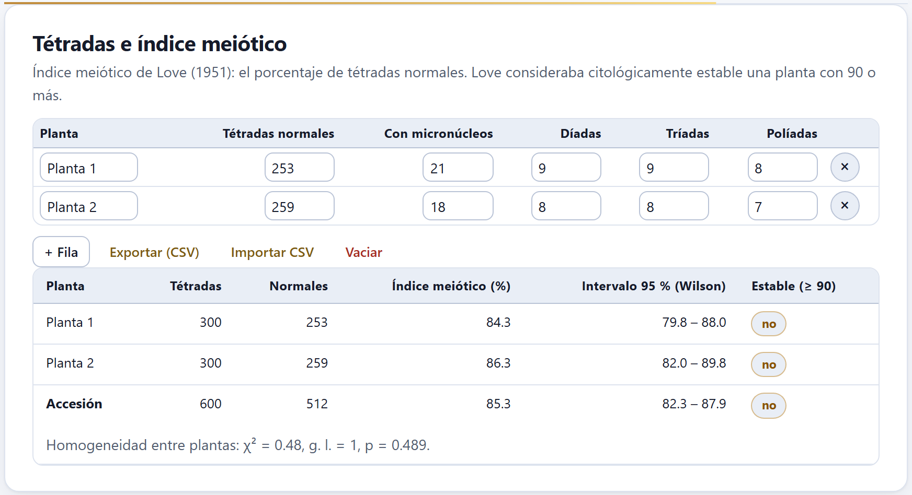
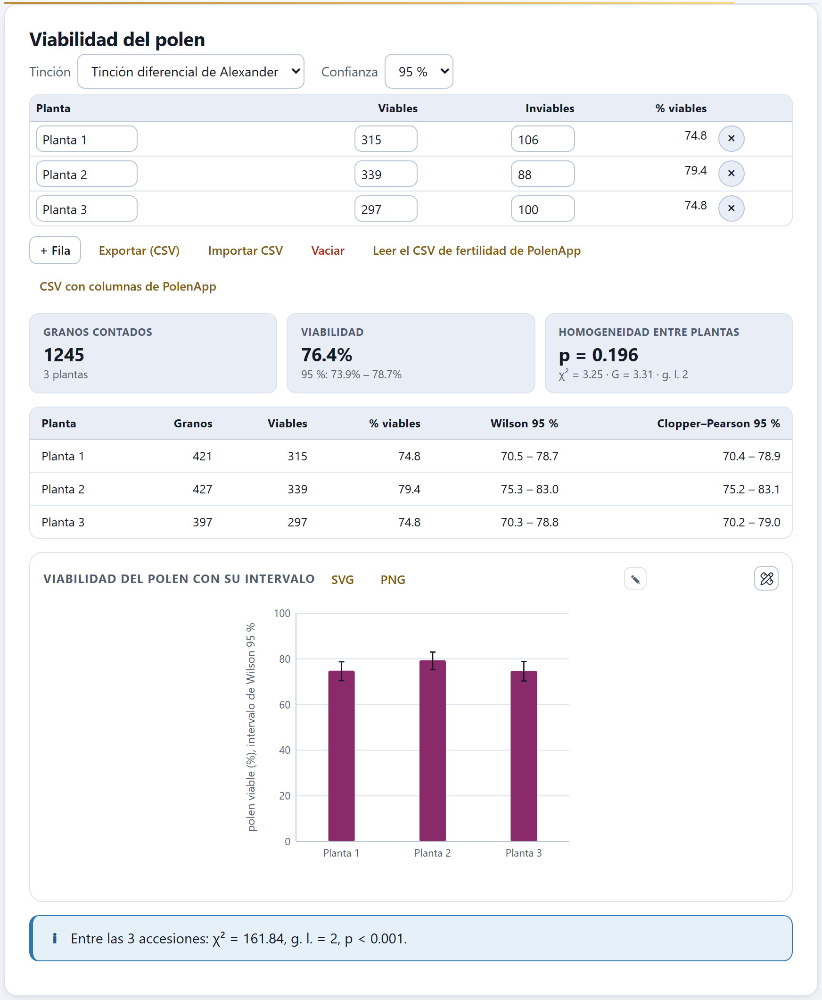

La meiosis dice cómo se aparean los cromosomas y qué tan regular es la formación de los gametos. El Bloque 5 recoge lo que cuentas al microscopio —las configuraciones en diacinesis o metafase I, las anormalidades de cada fase, las tétradas y el polen teñido— y lo convierte en quiasmas por célula, índice de recombinación, una prueba de autopoliploidía frente a alopoliploidía, el índice meiótico de Love y la viabilidad del polen con sus intervalos de confianza.
A diferencia de los Bloques 3 y 4, este bloque no usa las imágenes ni las medidas: sus datos son conteos que escribes, pegas o importas en cuatro tablas, y cada tabla guarda los de la accesión elegida.
En la tarjeta Accesión eliges la accesión, creas otra con + Accesión o abres el ejemplo con Abrir la serie poliploide de ejemplo: una especie inventada con tres poblaciones, diploide, tetraploide y hexaploide, de x = 7, con dos plantas y 25 células por planta, sus fases, tétradas y polen, todo simulado con el modelo de la app. Número básico x es el mismo número de los Bloques 3 y 6; aquí hace falta para plantear las hipótesis de la sección 5.3. Este capítulo usa sobre todo la población tetraploide.
Las cuatro tablas del bloque funcionan igual. Cada renglón es una célula (o una planta, según la tabla) y cada casilla se escribe a mano; los números se redondean a enteros. Debajo de cada tabla están + Fila, que añade un renglón (copiando la planta del anterior en la de configuraciones), Exportar (CSV), Importar CSV y Vaciar, que borra todos los renglones de la accesión tras confirmarlo. La × al final de un renglón lo borra.
Una fila por célula, con cuántas configuraciones de cada tipo viste: univalentes, bivalentes en varilla y en anillo, trivalentes, cuadrivalentes en cadena y en anillo, pentavalentes y hexavalentes en cadena y en anillo.

Las columnas son Planta, Célula, una por configuración (I, II varilla, II anillo, III, IV cadena, IV anillo, V, VI cadena, VI anillo) y Quiasmas contados. Las dos últimas, que no se editan, las calcula la app: Cromosomas suma los cromosomas de todas las configuraciones (un II tiene dos, un IV cuatro) y Quiasmas los estima: una cadena de k cromosomas tiene k − 1 quiasmas y un anillo k; así, varilla 1, anillo 2, III 2, IV en cadena 3, IV en anillo 4. Es el mínimo compatible con la configuración. Si contaste los quiasmas, escríbelos en Quiasmas contados y mandan sobre la estimación.

Debajo de la tabla, seis cifras resumen la accesión:
La tabla de resumen repite esas cuentas por planta y para toda la accesión: las configuraciones medias por célula (V y VI juntos en ≥ V), los quiasmas por célula y por bivalente, el índice de recombinación y el porcentaje de células con multivalentes. La gráfica Configuraciones por célula pone una serie por planta, con barras de error de una desviación.
En el diploide (2n = 14) no hay multivalentes: 5.42 bivalentes en anillo y 1.52 en varilla por célula, 12.36 ± 1.10 quiasmas por célula, 1.78 por bivalente, índice de recombinación 7 + 12.36 = 19.36. En el tetraploide (2n = 28) todas las células tienen multivalentes, 2.24 IV en cadena y 1.58 en anillo por célula, y los quiasmas por bivalente bajan a 1.55: hay más varillas. Su índice de recombinación es 14 + 21.78 = 35.78.
Un autopoliploide tiene varios juegos del mismo genoma, que pueden aparearse de a tres o de a cuatro; un alopoliploide junta genomas distintos que se aparean cada uno consigo mismo, en bivalentes. El bloque compara las configuraciones observadas con las esperadas bajo cada hipótesis.
Cada hipótesis se escribe como una fórmula genómica, una letra por juego: AAAA es un autotetraploide, AABB un alotetraploide, AAAABB un segmental intermedio. Con el número básico y las células ya escritas, la app propone sola la Hipótesis 1, la autopoliploide (AAAA en el tetraploide), y la Hipótesis 2, la alopoliploide de pares (AABB); la Hipótesis 3 (opcional) queda para la que quieras probar. Puedes escribir hasta ocho genomas; la fórmula, multiplicada por x, tiene que dar el 2n de las células, o un aviso lo dice. Quiasma por brazo, c puede ser Estimada de los datos o Fija, y entonces aparece Valor de c (0.8 por omisión).

La tabla da, para cada configuración, las observadas en todas las células y las esperadas bajo cada hipótesis, y al pie c, χ², los grados de libertad y el valor p. La gráfica Observado y esperado por célula lo dibuja por célula. Debajo, un aviso dice la conclusión:
Cada cromosoma tiene dos brazos. En el extremo de cada brazo, los homólogos de un grupo se aparean de dos en dos al azar (con un número impar, uno queda libre), de manera independiente en los dos extremos, y cada brazo apareado forma un quiasma con probabilidad c. Una configuración es un conjunto de cromosomas unidos por quiasmas: cadena si está abierta, anillo si está cerrada. Con cuatro homólogos, los dos extremos eligen la misma pareja con probabilidad 1/3, así que el apareamiento en cuadrivalente ocurre con probabilidad 2/3 (Sybenga 1975); las frecuencias siguen el mismo conteo que los modelos de Jackson y Casey (1982). La app las calcula exactamente, enumerando todos los apareamientos y todos los patrones de quiasmas, sin simular. Estimada, c es los quiasmas medios entre los brazos apareables: en el tetraploide, 21.78 / (7 × 4) = 0.778.
| Clases | I, II varilla, II anillo, III, IV cadena, IV anillo y ≥ V. Las que tienen menos de 5 esperadas se juntan con su vecina más pequeña antes de la prueba. |
| Grados de libertad | Las clases que quedan menos 1, y menos 1 más si c se estimó de los datos. |
| Si p ≥ 0.05 | entonces la hipótesis se ajusta a los datos (no quiere decir que sea cierta). |
| Si la hipótesis no permite una configuración observada | entonces queda rechazada, sea cual sea su χ². |
Con c fija en 0.80, AAAA sigue ajustándose en el tetraploide, pero menos holgadamente (χ² = 9.31, 5 g. l., p = 0.097).
En el hexaploide la app propone AAAAAA y AABBCC, con c = 0.850. La autohexaploidía queda muy lejos (χ² = 2777.05, 5 g. l., p < 0.001): espera 158.1 configuraciones de cinco o seis cromosomas y no se vio ninguna. AABBCC explica bien los univalentes y los bivalentes (χ² = 2.39 con 1 g. l.), pero no permite los 22 multivalentes observados (1 III, 3 IV en cadena y 18 en anillo) y queda rechazada. Si escribes AAAABB como tercera hipótesis, tampoco se ajusta (χ² = 447.33, 4 g. l.). La lectura es la de un alohexaploide con apareamientos ocasionales fuera de su propio genoma, que es justo como se simuló: un 16 % de sus células salieron del modelo AAAABB.

Una fila por planta y fase, con cuántas células normales viste y cuántas con cada anormalidad.
Las columnas son Planta, Fase (de Metafase I a Telofase II), Normales y siete anormalidades: Puentes, Fragmentos, Rezagados, Migración precoz, Husos múltiples o anormales, Micronúcleos y Otras. Cuenta cada célula anormal una sola vez, en su anormalidad principal: la app suma las anormales y las normales para obtener el total de células de la fase.

El resumen junta las plantas por fase: células, normales, cada anormalidad y el % anormales. La gráfica Células anormales por fase (%) lo dibuja con las fases abreviadas (MI, AI…). Como referencia, en el diploide de ejemplo ninguna fase pasa de 3.7 %.
El índice meiótico de Love (1951) es el porcentaje de tétradas normales; Love consideraba citológicamente estable una planta con 90 o más.
Una fila por planta, con Tétradas normales, Con micronúcleos, Díadas, Tríadas y Políadas. La tabla de resultados da por planta las tétradas contadas, las normales, el Índice meiótico (%), su Intervalo 95 % (Wilson) y si es Estable (≥ 90); con más de una planta, añade la fila de la accesión y, al pie, la prueba χ² de homogeneidad entre plantas.

Decide con el intervalo, no sólo con la cifra. En el tetraploide, hasta el extremo superior (87.9) queda por debajo de 90: la inestabilidad es clara. En el hexaploide de ejemplo, la planta 1 tiene 93.0 % pero su intervalo baja hasta 89.5; el diploide, con 96.8 % en la accesión, es estable sin duda.
Una fila por planta con los granos viables (teñidos) y los inviables; la app da la viabilidad con dos intervalos de confianza y prueba si las plantas difieren.
Arriba, Tinción registra cómo se tiñó el polen: Tinción diferencial de Alexander (por omisión), Carmín acético, Cloruro de tetrazolio (TTC) u Otra. No cambia las cuentas; la usan los métodos del Bloque 10. Confianza elige 95 %, 99 % o 90 % para los intervalos de esta tarjeta.

La tabla de la planta tiene la columna calculada % viables. Debajo, tres cifras: Granos contados con el número de plantas, Viabilidad de todos los granos juntos con su intervalo de Wilson, y Homogeneidad entre plantas, con el valor p y los estadísticos χ² y G de la tabla de plantas × viables/inviables. La tabla de resultados da cada planta con sus granos, viables, porcentaje y los intervalos de Wilson y de Clopper–Pearson, y la gráfica, cada planta con su intervalo de Wilson. Si las plantas difieren (p < 0.05), un aviso aconseja informarlas por separado; si hay polen en más de una accesión, otro aviso compara las accesiones con χ².
Dos botones más enlazan con la app de palinología de la suite: Leer el CSV de fertilidad de PolenApp lee su archivo de fertilidad (las columnas landrace_code, n_granos_completos y pct_atipico) y convierte el porcentaje de granos de forma atípica en inviables; un aviso recuerda que ese porcentaje viene de la forma del grano en microscopía electrónica, no de una tinción, y es sólo una aproximación. CSV con columnas de PolenApp escribe los datos de esta tabla en ese mismo formato.
El intervalo de Wilson (1927) es el que se recomienda para una proporción: tiene una cobertura cercana a la nominal incluso con proporciones altas como las del polen. El de Clopper–Pearson (1934) es exacto, con cobertura de al menos la nominal, y por eso un poco más ancho: en la planta 1 del tetraploide, 70.5 a 78.7 % contra 70.4 a 78.9 %. Con 99 % de confianza, la viabilidad del tetraploide va de 73.2 a 79.3 %. La homogeneidad se prueba con χ² y con G (razón de verosimilitudes); con conteos grandes dan casi lo mismo (3.25 y 3.31).
| Si hay multivalentes en muchas células | entonces prueba la autopoliploidía; si ninguna fórmula se ajusta, prueba una intermedia. |
| Si el índice meiótico es menor que 90 | entonces la planta es citológicamente inestable para Love (1951); míralo con su intervalo. |
| Si las plantas difieren (homogeneidad p < 0.05) | entonces informa cada planta por separado, no la accesión junta. |
| Si la viabilidad del polen baja junto con el índice meiótico | entonces las anormalidades meióticas son una explicación probable, como en el tetraploide de ejemplo (85.3 % de tétradas normales, 76.4 % de polen viable). |
Los datos del ejemplo son simulados: las cifras sirven para aprender a leer la app, no para describir una especie.
La tarjeta de hipótesis pide el número básico. Escríbelo en Número básico x. Un aviso dice que la fórmula no da el 2n de las células. La fórmula tiene una letra por juego: con x = 7 y 2n = 28 hacen falta cuatro letras. La cifra de cromosomas dice «no en todas». Alguna fila no suma el 2n: revisa la columna Cromosomas. Importé un CSV y no entró nada. El archivo necesita encabezados que la app reconozca; exporta una tabla para ver el formato. Cambié de accesión y las hipótesis se borraron. Es lo esperado: se vuelven a proponer con el número básico de la nueva accesión.